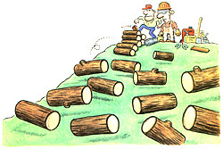

LAST LAUGH
SCRAP 2 X 4S WERE OUR MAIN FUEL THE first year we had a woodstove-square wood being easy to stack and carry. I know it isn't proper fuel for a woodstove, but it did keep us warm.
When all the construction scraps were gone, I decided to do the logical thing-buy a chain saw to take advantage of the "free" firewood growing on our property. (When I say "buy a chain saw," I really mean I went to Sears for a chain saw and came out with a brand-new Craftsman 20", a scabbard to protect the chain on the saw, an electric saw sharpener, heavy gloves, orange hard hat, safety goggles, earplugs, fuel and a fuel can, two kinds of oil, and this heavy apron/chaps thing to protect my legs.)
Soon after, I mounted my sawhorse and was ready to joust with the trees in my quest for the lost cord. As a novice, I only picked on fallen trees. I figured it was pretty hard to get squashed by something that's already lying on the ground. Before long, I was surrounded by stack after stack of neatly sawn 18" logs.
At the end of the day, when my saw and I were both out of gas, one of my neighbors came over to see what all the noise was about. When he saw my woodpile, he smirked.
"That's no way to stack wood," he laughed, giving the nearest pile a nudge with his boot. As if proving the domino effect, the first pile of logs toppled, hitting the second pile, and on and on, leaving me before long with only the realization that I own very little level land.
"You need crisscross cribbing on the ends for stability," he said. "Take a look at one of my piles next time you drive by."
As I rounded up my stray logs I thought about kicking his pile over, but quickly reconsidered. After all, he had been on the rational side (my side) during local road association negotiations. And I certainly didn't want to find out where a rural log-kicking feud might lead. So I inspected his arrow-straight rows of precisely stacked oak. I nudged the pile; it felt like it was nailed together.
Crisscross cribbing is hard to stack without splitting the logs-they keep rolling away. So it was back to the Agway for a maul. A vicious circle swirled in my brain: I wanted dry firewood. I had green, wet logs. Split wood dries faster than whole logs. But green wood is harder to split than dry wood, which, if I had, I wouldn't need to split.
My wrists and lower back gave out about the time the blisters on my palms broke, which was right after I split my last cribbing log. Three days and some massage therapy later, I regained the use of my back and hands. With a stiff finger, I dialed up my neighborhood expert to keep him current on the firewood situation.
"Get yourself a hydraulic splitter, son," he drawled. "I'd lend you mine, but you know how it is with lending tools to neighbors." Yes, I knew.
Seeing as I had 10 times more wood to split and no energetic teenage son to send out there to do it, I headed out in search of a log splitter.
For the cost of a dozen cords of seasoned oak-delivered, split, and stacked at my doorstep-I could purchase a lightweight log splitter. The salesman assured me that it would last a lifetime, which gave either me or the splitter at least a 10-year life span since my family only burns about a cord a year. He wanted me to consider a small tractor to haul the splitter to job sites on my property, and a trailer to haul the finished product back to my house. I would need to pay extra for warranties, insurance on everything, and maintenance agreements since I'm not mechanically inclined. Oh, and I'd need a new $50 trailer-hitch assembly for my truck to haul all the new toys home, where I knew I'd have to spend several weekends building a new storage shed to house all this laborsaving stuff. I made a mental note to leave room in the new shed for the Rototiller I needed for my garden. Suddenly, firewood preparation was going to cost me more than my entire college education. Dazed and babbling, I begged the salesman for a moment alone with my checkbook.
Well, following much soul-searching and gnashing of teeth, I did it. I wrote him a check... for a whopping $50.
Then I swung by the local rental yard and towed home a rented log splitter on my brand new trailer hitch.
|
 |
|
|